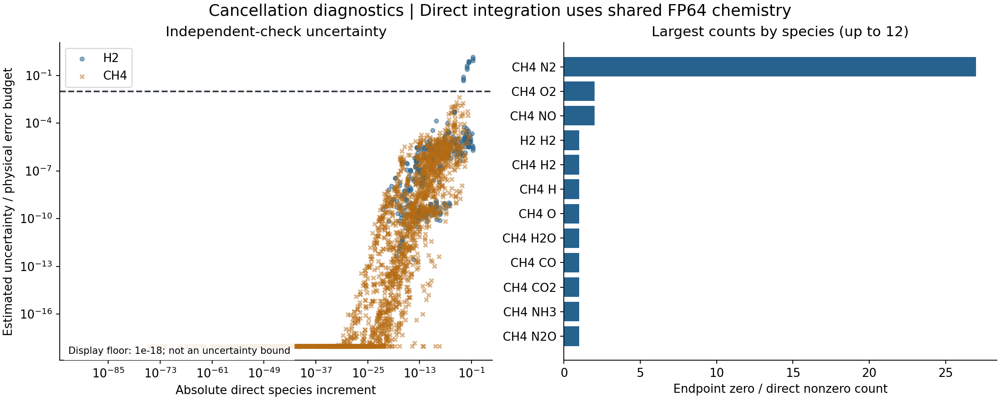

Executed on lh40902. Four parent trajectories. 96 intervals. 141.4 seconds. No model training.
Recommendation: proceed with a filtered reference subset, after review.
Keep the 12 unresolved components separate. Add independent parent trajectories before a train/validation/test split.
Do not generate the full grid or claim solver-level significant digits from this pilot.
What passed?
Check
Result
Denominator
Budget-fit species increments
3,012 (99.60%)
3,024 assessed components
Relative-fit species increments
2,132 (70.50%)
3,024 assessed components
Unresolved budget check
12
3 affected intervals
Direct zero estimates
144
Not a proof of exact physical zero
Endpoint zero / direct nonzero
43
Diagnostic count, not proof of physical accuracy
Solver failures
0
864
A budget-fit component has estimated reference uncertainty at most 1% of
1e-12 + 1e-6 * abs(Y_initial). Relative fitness also requires
abs(delta) > 100 * max(uncertainty, endpoint_spacing).
The relative check excludes 892 of 3,024 components, including zero estimates.
These are empirical agreement checks, not rigorous error bounds.
Solver agreement and label fitness
The left plot and table use the p99 of the maximum species error in each interval, across 96 intervals.
This is not the pooled component p99. Errors use the direct Radau solution as a working reference, not exact truth.
Solver / input setting
p99 interval-maximum error / budget
Maximum error / budget
Solve seconds
absolute18
1.09045
1.4363
3.011
absolute21
0.57673
0.81804
3.103
default
49.863
86.7683
2.974
fp32_input
5538.3
7174.25
3.146
radau_check
0.804741
0.889029
32.376
relative10
29.5111
63.6635
2.919
relative12
17.9812
20.6536
2.949
step_limited
0.57673
0.81804
3.115
The Radau reference used 86.1 solve seconds.
Its error against itself is omitted. Tight relative tolerance alone did not remove the largest differences.
The initial-state budget is strict for species that form rapidly from a near-zero initial concentration.
Where the reference check failed
Interval
Species
Direct increment
Uncertainty / budget
h2-1500K-a1-h0.0001
H2O
0.1836985
1.4363
h2-1500K-a2-h0.0001
H2O
0.1837597
1.0723
h2-1500K-a0-h0.0001
H2O
0.1836967
0.81699
h2-1500K-a2-h0.0001
OH
0.0255969
0.77958
h2-1500K-a0-h0.0001
OH
0.02560235
0.70241
h2-1500K-a1-h0.0001
OH
0.0256022
0.65924
h2-1500K-a1-h0.0001
O
0.008987444
0.41617
h2-1500K-a2-h0.0001
O
0.008969872
0.31148
h2-1500K-a0-h0.0001
O
0.00898797
0.23795
h2-1500K-a1-h0.0001
H
0.001457273
0.078264
h2-1500K-a2-h0.0001
H
0.001454004
0.058849
h2-1500K-a0-h0.0001
H
0.001457371
0.046888
All unresolved species components occur in three H2 intervals at 1500 K, with duration 1e-4 s.
They include large product increments. Thus, reference disagreement is not only a trace-species problem.
Exclude these components, or exclude the three intervals as a conservative whole-sample rule.
Do not relax the physical budget after seeing these results.
Cancellation and input precision

The direct solver integrates changes from zero. It can retain changes that endpoint subtraction loses.
It still shares Cantera FP64 thermochemistry with the endpoint solver. The plotted very small changes
are numerical estimates; their magnitude is not evidence of many correct significant digits.
To isolate input effects, compare the same tight endpoint solver before and after rounding T, P and Y
to FP32, then restoring FP64 and normalizing Y. The p99 interval-maximum difference is
5538.84 physical budgets; the maximum is 7174.82.
This changes the initial physical state. It is not an FP32 output-rounding test.
Conservation and cost
Setting
Mass change sum (absolute)
Element change max
Relative enthalpy drift
Minimum Y
absolute21
3.3344e-15
3.4681e-15
1.4442e-12
-3.7953e-43
radau_reference
5.8287e-16
5.3429e-16
6.1331e-15
-2.5173e-44
Tiny negative mass fractions remain in the saved results. No clipping was used to hide them.
A linear estimate for 54 parent trajectories, eight anchors and five intervals is 2,160 intervals,
or about 53 minutes for all nine checks on this host. With 40 anchors it is about
4.4 hours. This is a rough cost estimate. Other conditions and the unverified
Okafor mechanism can change the cost. It is not a request to start that run.
Next experiment and limits
The code has budget-linear, signed-power and scaled-asinh interfaces, stable inverse tests,
train-only normalization and a fixed FP32/FP64 comparison configuration. No models were trained.
The pilot has only two parents per mechanism. It cannot supply three independent data splits.
Add a small reviewed set of parents, then compare the three coordinates with matched model settings.
The direct method is SciPy Radau on scaled delta-T and delta-Y. Two settings and tight CVODES checks
estimate uncertainty. This is not arbitrary precision. Shared chemical-rate errors remain unmeasured.
The H2 and CH4 tests use Cantera h2o2.yaml and gri30.yaml. The Fuel-study Okafor NH3/CH4 files remain
pending source verification. No flame or full-trajectory surrogate result is claimed.
Reproduction and provenance
Raw data remain in /data2/kexiao/work/projects/DFODE-kit/runs/reference-pilot/checkpoint02-20261008.
The pilot container used one CPU, 4 GB memory, no network and a one-hour limit.